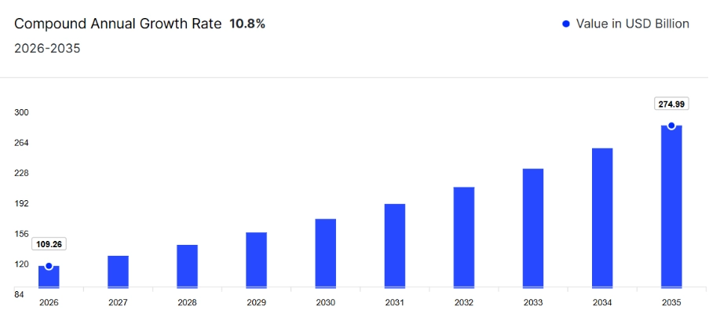
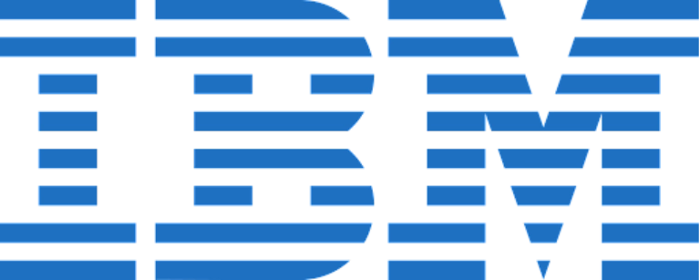

Strong database knowledge is an important part of technical interviews because many companies look for candidates who understand how data is stored, managed, and organized. A solid understanding of DBMS creates a strong base for many technical and software-related roles.
Preparing for technical interviews can feel difficult at first, especially when you are unsure which topics to focus on. With the right preparation, the process becomes much easier.
Practicing DBMS interview questions helps you understand commonly asked topics and improve your knowledge of important concepts. It also builds confidence for interviews.
This blog covers questions from beginner to advanced levels, making it easier to strengthen your concepts, improve preparation, and get ready for interviews with confidence. To gain practical skills in databases, frontend, and backend technologies, you can also join the Full Stack Development Course by WsCube Tech.
The Growing Demand for DBMS
Data is one of the most valuable assets for modern businesses, and managing it efficiently has become essential. This is where Database Management Systems (DBMS) play an important role.
The demand for DBMS has continued to rise over the years as businesses increasingly rely on data-driven systems. DBMS helps organizations manage large volumes of data, improve accessibility, maintain security, and support smooth business operations.
In fact, the global DBMS market size reached USD 65.3 billion in 2022. From 2023 to 2028, the market is expected to grow at a compound annual growth rate (CAGR) of 10.8%, showing the increasing demand for database technologies.

With this growing demand for DBMS, the need for skilled professionals is also increasing rapidly. DBMS skills are highly valued across industries such as information technology, finance, healthcare, and retail.
Some of the most in-demand DBMS technologies include:
Knowledge of cloud-based database platforms such as Amazon Web Services (AWS) and Microsoft Azure is also becoming increasingly important as more businesses continue moving to cloud environments.
If you want to build a strong career in the tech industry, developing DBMS and database-related skills can help you stand out and improve your career opportunities.
That is why this blog covers top DBMS interview questions and answers, from basic concepts to advanced topics. Whether you are a beginner or an experienced learner, this guide will help strengthen your database knowledge and prepare you for interviews.
DBMS Interview Questions for Freshers
Here are some of the most commonly asked basic DBMS interview questions and answers for freshers that are frequently discussed during the recruitment process:
1. What is a database?
A database is an organized collection of data stored electronically in a structured manner. It helps users efficiently store, manage, retrieve, and update information, making data handling easier and supporting applications such as banking, websites, and business systems.
2. What is DBMS? Explain in simple terms.
DBMS stands for Database Management System. It is a software system used to store, organize, manage, and retrieve data in a database. A database contains information stored electronically, and DBMS acts as a bridge that helps users interact with that data in an organized and efficient way.
Let’s Understand DBMS Definition With Real-life Example
Imagine you run a small retail store that sells various products, such as clothing, accessories, and home goods. You want to keep track of your inventory, customer information, sales data, and employee records.
Instead of using a bunch of different spreadsheets or paper records to manage all of this information, you could use a database management system to store and organize everything in one place.
With a DBMS, you could create a database that includes tables for each type of information you need to track. This can include a table for inventory, a table for customer information, a table for sales data, a table for employee records, and so on.
You can easily add new data to each table, update existing data, or delete data as needed. You could also run queries to search for specific information or generate reports to analyze data trends.
Overall, a DBMS would make it much easier for you to manage and use all of the data you need to run your retail store effectively.
3. Where can DBMS be used?
DBMS (Database Management System) can be used in a variety of applications and industries where data storage, organization, retrieval, and manipulation are required. Here are some common examples of where DBMS can be used:
a) Business:
It is widely used by businesses to store and manage customer data, sales data, inventory data, financial data, employee data, and much more.
b) Healthcare:
DBMS is used to manage patient data, including medical history, prescriptions, test results, and other information.
c) Education:
Schools, colleges, and other educational organizations can implement DBMS to store student information, such as attendance records, grades, and academic performance.
d) Government:
Governments use DBMS to store and manage data related to taxes, licenses, permits, and other official records.
e) E-commerce:
Online retailers use DBMS to store and manage product catalogs, customer orders, and payment information.
f) Social Media Platforms:
Social media platforms use DBMS to store and manage user data, including profiles, posts, comments, and messages.
g) Telecommunication Industry:
Telecommunications companies use DBMS to store and manage customer account information, call records, and network usage data.
4. When was DBMS first introduced?
The first DBMS was introduced in the early 1960s, with IBM's Integrated Data Store (IDS) being one of the earliest examples.
However, the relational database model, which forms the basis of most modern DBMSs, was first introduced in the 1970s by Edgar F. Codd, a researcher at IBM.
Codd's paper "A Relational Model of Data for Large Shared Data Banks" described a new approach to data management that emphasized the use of tables and relationships between them, rather than hierarchical or network-based data models.
The first commercial relational DBMS was released by IBM in 1981, called SQL/DS. This was followed by other popular relational DBMSs, including Oracle, Microsoft SQL Server, and MySQL.
5. What are the benefits of DBMS?
There are several advantages of using a DBMS (Database Management System) in organizations and applications. Some of the major benefits are listed below:
1. Efficient data management:
DBMS helps manage data efficiently by organizing it in a structured manner, making it easier to store, search, retrieve, and update information.
2. Data consistency and integrity:
Database management system ensures data consistency and integrity by enforcing data constraints and rules, such as uniqueness and referential integrity, to prevent errors and inconsistencies in the data.
3. Improved data security:
It provides better data security by allowing access to data only to authorized users and by implementing various security mechanisms like encryption, access control, and auditing.
4. Improved data accessibility:
It provides easy access to data by allowing multiple users to access and manipulate data simultaneously. This can be achieved without compromising the data's integrity or consistency.
5. Increased productivity:
A Database Management System increases productivity by reducing manual work, providing faster data access, and minimizing errors.
6. Better decision-making:
Moreover, it facilitates better decision-making by providing access to accurate, up-to-date, and comprehensive data. This helps in making informed decisions based on data analysis.
7. Scalability:
DBMS can handle large amounts of data and can scale up or down depending on an organization's needs, making it easy to manage growing amounts of data.
6. What is the difference between a database and DBMS?
A database and a DBMS (Database Management System) are two related but distinct concepts in the field of data management.
It is one of the top DBMS interview questions for placement, especially if you are a fresher.
Here are the differences between both, presented in tabular form:
| Database | DBMS |
| A collection of related data | A software system that manages the storage, organization, and retrieval of data |
| Can be a simple text file or a complex system of interconnected tables | A software system with many features and capabilities |
| Can be managed manually or with the help of a DBMS | Requires a DBMS to function effectively |
| Can be small or large | Can handle small to very large databases |
| Primarily focuses on storing and retrieving data | Provides a wide range of features, including data security, backup and recovery, concurrency control, and more |
| Data can be accessed and modified directly | Data access and modification are controlled by the DBMS, using SQL (Structured Query Language) or other programming languages |
| Performance and scalability are limited by the hardware and software used to manage the database | Performance and scalability can be optimized using various techniques and features provided by the DBMS |
Suggested Reading: NodeJS Interview Questions and Answers
7. What is a relation in DBMS?
In DBMS, a relation refers to a table that stores data in rows and columns. Each row represents a record (tuple), and each column represents an attribute, helping organize and manage related information in a structured format.
8. Are NULL values in a database the same as that of blank space or zero?
No, NULL values in a database are not the same as a blank space or zero. A NULL value represents the absence of a value or unknown information. It indicates that data is missing, undefined, or not yet available.
On the other hand, a blank space is an actual character value, and zero (0) is a numeric value. Both contain specific data, while NULL simply means no value exists in that field.
9. What are rows and columns in a DBMS?
- Rows: Rows represent individual records or entries in a table. Each row contains complete information about a single item.
- Columns: Columns represent attributes or fields of a table. Each column stores a specific type of information, such as name, age, or ID.
10. What are the 3 main types of databases?
There are several types of databases, but the three main types of databases are:
i) Relational databases
- Relational databases are the most common type of databases. They store data in tables, where each table represents a specific entity or object, and each row represents a record or instance of that entity.
- Relational databases use SQL (Structured Query Language) to manage and manipulate data.
ii) NoSQL databases
- NoSQL databases are non-relational databases that store data in a variety of ways, such as key-value pairs, documents, or graphs.
- They are designed to handle large volumes of unstructured or semi-structured data and can scale horizontally to handle increasing amounts of data.
iii) Object-oriented databases
- Object-oriented databases store data as objects, which are instances of classes that contain both data and behavior.
- Object-oriented databases are well-suited for complex data structures and applications that require extensive data manipulation.
Each type of database has its own strengths and weaknesses and is suitable for different types of applications. Choosing the right type of database depends on factors such as the size and complexity of the data, the performance requirements of the application, and the scalability needs of the system.
11. What are the 3 main functions of a DBMS?
The three main functions of a DBMS (Database Management System) are:
i) Data Storage
One of the primary functions of a DBMS is to store large amounts of data in an organized and structured way. It defines the structure of data using tables, fields, and relationships, while also managing how data is stored on physical devices.
ii) Data Retrieval and Manipulation
A DBMS allows users to retrieve, insert, update, and delete data efficiently. It uses languages such as SQL (Structured Query Language) to search, filter, sort, and manage information according to user needs.
iii) Data Security and Integrity
A DBMS helps protect data by controlling user access through permissions and roles. It also maintains data accuracy and consistency using features such as validation rules and transaction management.
These functions help organizations manage large volumes of data efficiently while ensuring that the information remains secure, accurate, and easily accessible.
12. What is the difference between DBMS and RDBMS? Explain with an example.
DBMS (Database Management System) and RDBMS (Relational Database Management System) are two different types of database management systems. Here are the differences between the both:
| DBMS | RDBMS |
| Manages data as files | Manages data as tables or relations |
| Stores data in a hierarchical or navigational manner | Stores data in a tabular or two-dimensional form |
| Does not enforce data integrity or consistency | Enforces data integrity and consistency using various constraints, such as primary keys, foreign keys, and other rules |
| Does not support complex queries and transactions | Supports complex queries and transactions using SQL or other query languages |
| Does not provide support for relationships between tables | Provides support for relationships between tables, enabling the creation of complex data models |
| Examples: IMS, CODASYL | Examples: Oracle, MySQL, SQL Server |
For example, consider a school management system. In a DBMS, student and course information may be stored separately with limited relationships between them. In an RDBMS, tables such as Students, Courses, and Enrollments can be connected using keys, making it easier to manage and retrieve related data efficiently.
Similarly, Oracle, MySQL, and SQL Server are examples of RDBMS that support relationships and advanced SQL operations. On the other hand, IMS is a DBMS that uses hierarchical structures and provides limited support for complex data relationships.
You must be well-prepared for these types of DBMS interview questions and answers to strengthen your concepts and improve your chances of landing your dream job.
13. What is the purpose of database management system?
Some of the key purposes of using a DBMS include:
1. Data organization and management:
It organizes data in a structured way, making it easy to search, retrieve, and manipulate data. It allows users to define the structure of the data and establish relationships between data elements.
2. Data integrity and consistency:
A database management system enforces data integrity and consistency by providing mechanisms for data validation, error checking, and data constraints. This ensures that data is accurate, complete, and reliable.
3. Data security:
Moreover, it provides better data security by allowing access to data only to authorized users and by implementing various security mechanisms like encryption, access control, and auditing.
4. Data sharing and concurrency:
Using a database management system, more than one user can access and manipulate data simultaneously, without compromising the data's integrity or consistency. It manages concurrency control, ensuring that multiple users can access data without causing conflicts or inconsistencies.
5. Data backup and recovery:
It offers mechanisms for data backup and recovery, ensuring that data can be restored in case of accidental deletion or system failure.
6. Performance optimization:
There are also some mechanisms for optimizing the performance of data retrieval and manipulation operations, such as indexing, query optimization, and caching.
14. Which are the top DBMS languages?
The top Database Management System languages include:
1. SQL (Structured Query Language):
SQL is the most commonly used language for managing relational databases. It allows users to create, modify, and retrieve data from a database.
2. PL/SQL (Procedural Language/Structured Query Language):
PL/SQL is Oracle’s procedural extension of SQL. It allows users to write functions, procedures, loops, and other program logic for Oracle databases.
3. T-SQL (Transact-SQL):
T-SQL is Microsoft's proprietary language for managing and manipulating data in SQL Server databases. It is an extension of SQL that allows users to write procedural code to manipulate data.
4. NoSQL (Not only SQL):
NoSQL databases do not rely only on traditional SQL. Databases such as MongoDB and Cassandra use their own query methods and structures for handling unstructured or large-scale data.
5. PL/pgSQL:
PL/pgSQL is a procedural language used in PostgreSQL. It allows users to write stored procedures, functions, and triggers to manipulate data.
15. What are attributes in DBMS?
An attribute refers to a characteristic or property of an entity, object, or relationship that is stored in a database. It is a named column of a table that stores a specific type of data, such as a string, number, or date.
Attributes in DBMS are used to define the structure of a database and to represent the characteristics of the data that is stored in the database. Each attribute has a name and a data type, which specifies the kind of data that can be stored in the attribute.
For example, an attribute called "customer_name" might have a data type of "string," indicating that it can store a sequence of characters.
Recommended Professional Certificates
Full Stack Development Course with AI Engineering
WordPress Bootcamp
16. What is the difference between DBMS and SQL?
DBMS and SQL are two different concepts, but they are often used together to manage and modify databases.
Here is a comparison showing the differences between SQL and DBMS:
| DBMS | SQL |
| A software system used to manage and organize databases | A programming language used to interact with a DBMS and manipulate data |
| Provides mechanisms for creating, storing, modifying, and retrieving data | Provides a standard syntax for querying and manipulating data in a database |
| Can be used to manage different types of databases, such as relational, hierarchical, and network databases | Primarily used for managing relational databases |
| Provides an interface for users to access and interact with data stored in a database | Used to create and modify database structures, such as tables, indexes, and views |
| Provides security mechanisms to control access to data and ensure data integrity | Used to retrieve data using queries, such as SELECT, INSERT, UPDATE, and DELETE |
| Examples include Oracle, Microsoft SQL Server, MySQL, and PostgreSQL | Examples include Oracle SQL, Microsoft SQL Server T-SQL, MySQL SQL, and PostgreSQL SQL |
Example of how DBMS and SQL work together for database management:
Let's say you have a database that stores customer information, and you want to retrieve a list of customers who live in a particular city. To do this, you would use SQL to write a query that retrieves the relevant data from the database.
The query might look something like this:
SELECT customer_name, customer_address
FROM customers
WHERE customer_city = 'New York';This query would retrieve the customer names and addresses of all customers who live in New York. The DBMS would then execute the query and retrieve the relevant data from the database, returning the results to the user.
17. What are the 5 basic SQL commands?
SQL (Structured Query Language) is a standard language used to manage relational databases. There are many SQL commands available, but the five basic SQL commands are:
1. SELECT
Using it, the retrieval of data can be done among tables. It allows you to specify which columns to retrieve and any filters or conditions to apply.
2. INSERT
It is used for adding new data to a table in a database. It requires specifying the name of the table and the values to insert for each column.
3. UPDATE
It is used for modification to existing data in a table in a database. It requires specifying the name of the table, the columns to update, and the new values.
4. DELETE
The DELETE command is used to remove data from a table in a database. It requires specifying the name of the table and any conditions to apply.
5. CREATE
The CREATE command is used to create new tables, views, indexes, and other database objects. It requires specifying the name of the object and the columns or other properties to define.
These five basic SQL commands are the foundation of many more complex SQL statements and are essential for managing data in a relational database.
18. What is normalization in DBMS?
Normalization is the process of organizing data in a database to reduce redundancy and improve data integrity. It follows a set of rules that help structure the database efficiently, ensuring data is stored accurately and without unnecessary duplication.
The normalization process divides large tables into smaller related tables and creates relationships between them. Its main goal is to eliminate duplicate data and ensure that each piece of information is stored only once.
There are different levels of normalization called Normal Forms (NF). The most commonly used are 1NF, 2NF, 3NF, and BCNF. Here is a brief overview of each normal form:
- First Normal Form (1NF): A table is in 1NF if each column contains only atomic values and there are no repeating groups.
- Second Normal Form (2NF): A table is in 2NF if it is already in 1NF and all non-key attributes fully depend on the entire primary key. This removes partial dependency.
- Third Normal Form (3NF): A table is in 3NF if it is already in 2NF and has no transitive dependency. This means non-key attributes should depend only on the primary key.
- Boyce-Codd Normal Form (BCNF): A table is in BCNF if every determinant in the table is a candidate key. It is a stronger version of 3NF that removes certain anomalies not handled by 3NF.
Normalization is one of the most important DBMS concepts and is commonly asked in technical interviews.
19. What are the main DBMS components?
A Database Management System (DBMS) consists of several components that work together to store, manage, and manipulate data efficiently. The main components of a DBMS are:
1. Hardware:
Hardware includes the physical devices used to store and process data, such as servers, storage devices, and networking equipment.
2. Software:
Software refers to the DBMS application and related tools that help users create, manage, and access databases. Examples include database software, drivers, and programming interfaces.
3. Data:
Data is the actual information stored inside the database, such as customer details, employee records, or transaction information.
4. Procedures:
Procedures are the rules and instructions used to manage and access data. They include security policies, backup processes, and recovery methods.
5. Database schema:
The database schema is the structure or blueprint of the database. It defines tables, attributes, relationships, and constraints.
6. Database engine:
The database engine is the core part of a DBMS that handles storing, retrieving, and processing data. It manages functions such as indexing, caching, and transaction processing.
7. Users:
Users are the people or applications that interact with the database, including database administrators, developers, and end users.
These components work together to ensure efficient storage, security, and management of data within a DBMS.
20. What are the disadvantages of DBMS?
While DBMS offers many benefits, there are also some disadvantages to consider.
1. Complexity:
DBMS can be complex and challenging to understand, especially for users who are unfamiliar with database concepts and programming. It may require extra training, specialized knowledge, and skilled professionals, which can increase the cost of hiring and maintaining resources.
2. Cost:
DBMS can be expensive, especially for large-scale systems that require high-performance hardware and software, as well as ongoing maintenance and support.
3. Security:
While DBMS can provide security features such as encryption, access controls, and backup and recovery procedures, they are still vulnerable to data breaches and other security threats. This can be particularly concerning for sensitive or confidential data.
4. Single point of failure:
DBMS relies on a single point of failure, meaning that if the system fails or experiences a breach, the entire database can be compromised or lost.
5. Performance:
DBMS can be slower than traditional file-based systems, particularly for complex queries or large volumes of data. This can impact the overall performance of applications that rely on the database.
6. Maintenance:
It requires ongoing maintenance and support, including regular backups, updates, and patches, which can be time-consuming and costly.
21. What is the difference between DBMS and file system?
DBMS and file systems are two different approaches to managing data. Here are the main differences between the two, presented in tabular comparison form:
| Feature | DBMS | File System |
| Data Storage | Organized into tables with inter-related data | Unorganized data stored in files and folders |
| Data Access | Structured query language (SQL) used to access and retrieve data | File paths used to access data |
| Data Integrity | Ensures data consistency through referential integrity, normalization, and other rules | No built-in data consistency checks or rules |
| Scalability | Supports large, complex datasets and multiple users simultaneously | Limited in scalability and performance for large-scale datasets |
| Security | Provides granular access controls, authentication, and authorization mechanisms | Relies on operating system permissions and access controls |
| Maintenance | Requires ongoing maintenance and support, including backups, updates, and patches | Maintenance and support required, but typically less complex than DBMS |
| Applications | Typically used for business applications, e-commerce, and data-driven applications | Often used for document management, file sharing, and personal file storage |
Suggested Reading: Best JavaScript Frameworks and Libraries
22. What are ACID properties of DBMS?
ACID stands for Atomicity, Consistency, Isolation, and Durability. These are the key properties of a DBMS that ensure transactions are processed reliably and maintain data accuracy and consistency.
1. Atomicity
Atomicity ensures that a transaction is treated as a single unit of work. Either all operations in the transaction are completed successfully, or none of them are executed. If any step fails, the transaction is rolled back.
2. Consistency
Consistency ensures that a transaction brings the database from one valid state to another. It prevents violations of rules and constraints, keeping data accurate and reliable.
3. Isolation
Isolation ensures that multiple transactions can run simultaneously without affecting each other. Intermediate changes made by one transaction are not visible to other transactions.
4. Durability
Durability ensures that once a transaction is successfully committed, the changes are permanently stored in the database, even if a system crash or power failure occurs.
Together, these ACID properties help maintain reliable and secure transactions, making them essential for systems such as banking, airline reservations, and financial applications.
23. What is a tuple in DBMS?
A tuple refers to a single row or record in a database table that contains a set of related attributes or fields. A tuple represents a complete set of data for a specific entity or object that is being tracked by the database.
This is also one of the most important interview questions on DBMS for freshers.
24. What is checkpoint in DBMS?
A checkpoint in DBMS is a mechanism used to maintain the consistency and durability of a database. It marks a point where all modified data in memory is written to disk and transaction logs are updated.
When a checkpoint occurs, the DBMS transfers updated data from the buffer cache to physical storage and records the changes. This process helps ensure that committed transactions are safely stored and can be recovered after a system failure.
Checkpoints can be created automatically at regular intervals or manually by a Database Administrator (DBA). They help reduce recovery time and minimize data loss during system crashes or power failures.
25. Explain what a Relation in DBMS is. How is it different from the Relation Schema?
Relation
A relation is a table in a database that stores related data in a structured format using rows and columns. Each row represents a record (tuple), and each column represents an attribute or field. In DBMS, a relation is commonly referred to as a table.
Relation Schema
A relation schema is the structure or blueprint of a relation. It defines details such as column names, data types, and constraints that determine how data should be stored in the table.
In simple terms, a relation schema defines the design of the table, while the relation is the actual table containing data based on that design.
To understand this better, think of a relation as a completed building, while the relation schema is the architectural blueprint used to create it. The blueprint defines the structure, and the building is the final result.
26. What is DDL and DML?
DDL and DML are two important types of SQL statements used in database management.
DDL (Data Definition Language)
DDL stands for Data Definition Language, which is used to define the structure of a database schema.
DDL commands are used to create, modify, and delete database objects such as tables, indexes, views, and stored procedures. Some common DDL commands include:
- CREATE
- ALTER
- DROP
- TRUNCATE
DML (Data Manipulation Language)
DML stands for Data Manipulation Language, which is used to manipulate the data stored within a database.
DML commands are used to add, modify, retrieve, and delete data from a database. Some common DML commands include:
- SELECT
- INSERT
- UPDATE
- DELETE
27. What is Data Warehousing?
Data Warehousing is the process of collecting, storing, and managing large amounts of data from multiple sources in a centralized repository called a data warehouse. It is designed for reporting, analysis, and decision-making rather than day-to-day transaction processing.
A data warehouse stores historical and organized data, allowing businesses to analyze trends, generate reports, and make informed decisions more effectively. It helps improve business intelligence and supports data-driven strategies.
28. What does query optimization mean in DBMS?
Query optimization is the process of improving the performance of database queries by selecting the most efficient query execution plan.
When a query is executed in a database, the DBMS must determine the most efficient way to execute the query, which involves selecting the appropriate indexes, algorithms, and access methods to use to retrieve the requested data.
Query optimization process selects the best execution plan for a query, based on factors such as the size of the data set, available system resources, and the complexity of the query.
29. Why is query optimization important?
Query optimization is important because it can significantly improve the performance of database queries, which can be crucial in large-scale applications with high volumes of data.
A well-optimized query can reduce the time and resources required to retrieve data, resulting in faster query response times, improved system performance, and a better user experience.
To optimize queries, DBMS systems use a variety of techniques such as index selection, join ordering, and cost-based optimization. The specific approach used by a DBMS depends on its architecture, the type of data being stored, and the query patterns of the application.
30. Explain the concept of denormalization in DBMS.
Denormalization is a database design technique used to improve query performance by intentionally adding redundant data to one or more tables. It involves reducing normalization rules to simplify database structure and decrease the number of table joins required during data retrieval.
The main goal of denormalization is to increase read performance, especially in systems where fast data access is more important than minimizing data duplication. Although it may introduce redundancy, it can significantly improve query speed.
Example
Consider an online bookstore database where Customers, Orders, and Books are stored in separate normalized tables. To retrieve complete order details, multiple table joins are required.
By denormalizing the database, customer and book information can be added directly to the Orders table. This reduces joins and allows data to be retrieved faster, improving query performance.
DBMS - Beginners Interview Questions and Answers: Video Guide
Advanced DBMS Interview Questions and Answers
Are you preparing for advanced DBMS interviews and looking to improve your knowledge? Advanced interview rounds often test your understanding of complex database concepts and real-world problem-solving skills.
In this section, we will explore some important advanced DBMS interview questions and answers designed for experienced professionals and learners who want to strengthen their database knowledge and prepare with confidence.
1. Explain the difference between a 2-tier and 3-tier architecture in a DBMS.
A 2-tier architecture and 3-tier architecture are database application structures that differ in the way components communicate with each other. The main difference is the number of layers involved between the user and the database.
2-Tier Architecture
In a 2-tier architecture, the client application directly communicates with the database server. The client handles both the user interface and business logic, while the server manages the database.
Structure:
Client ↔ Database Server
Example: Desktop applications connected directly to a database.
3-Tier Architecture
In a 3-tier architecture, an additional application layer is placed between the client and the database. The business logic is handled by the application server, improving security, scalability, and performance.
Structure:
Client ↔ Application Server ↔ Database Server
Example: Web applications where users interact through a browser, application logic runs on a server, and data is stored in a database.
The 2-tier model is simpler and suitable for small applications, while the 3-tier model is more secure, scalable, and commonly used in modern systems.
2. What is data dependency in DBMS?
Data dependency in DBMS refers to the relationship between different attributes or data elements within a database. It describes how changes to one data element can impact other related data elements.
Types of Data Dependencies
There are two main types of data dependencies:
1. Functional dependency:
This occurs when one attribute or set of attributes in a table determines the value of another attribute.
For example, in a table of customer orders, the customer ID attribute may determine the customer name attribute.
2. Transitive dependency:
This occurs when a functional dependency exists between three or more attributes, where one attribute determines another attribute which, in turn, determines a third attribute.
For example, in a table of employee data, the employee ID attribute may determine the department attribute, which in turn determines the manager attribute.
3. What are database constraints?
Database constraints in DBMS are rules that are used to limit the type of data that can be inserted, updated, or deleted in a database. Constraints are used to ensure data integrity, consistency, and accuracy within a database.
Types of Database Constraints
There are several types of database constraints in DBMS:
1. Primary key constraint:
This ensures that each record in a table has a unique identifier. The primary key constraint can be used to prevent duplicate data from being inserted into a table.
2. Foreign key constraint:
This establishes a relationship between two tables based on a common attribute or key. The foreign key constraint ensures that the data in the dependent table is consistent with the data in the parent table.
3. Unique constraint:
This ensures that a specific column or set of columns in a table contains unique values. The unique constraint can be used to prevent duplicate data from being inserted into a table.
4. Not null constraint:
This ensures that a specific column in a table cannot contain null values. The not null constraint can be used to enforce data completeness and accuracy.
5. Check constraint:
This ensures that the data in a column meets a specific condition or set of conditions. The check constraint can be used to enforce data accuracy and consistency.
4. What is data mining, and how is it used to extract useful information from a database?
Data mining is the process of discovering patterns, trends, and insights in large datasets using statistical and machine learning techniques. It involves extracting useful information from a database to help businesses make informed decisions, identify market trends, and improve operational efficiency.
Data mining techniques can be applied to a wide range of industries, including finance, healthcare, retail, and e-commerce.
Example
A retailer may use data mining techniques to analyze customer purchase data to identify products that are frequently purchased together. This information can be used to optimize product placement and promotions, leading to increased sales and customer satisfaction.
5. What are the different steps and techniques involved in data mining?
The process of data mining involves several steps, including:
- data preprocessing
- data cleaning
- data transformation
- data mining
- interpretation/evaluation of results
During data mining, various statistical and machine learning algorithms are applied to the data to discover patterns and trends. The output of data mining can be presented in various forms, such as graphs, charts, and reports.
Some common techniques used in data mining include:
- association rule mining
- classification
- clustering
- regression analysis
- anomaly detection
Each technique is used to address a specific problem and extract insights from the data.
Upcoming Masterclass
Attend our live classes led by experienced and desiccated instructors of Wscube Tech.


6. What is data warehousing, and how is it different from a traditional database system?
A data warehouse is a large, centralized repository of data that is used to support decision-making activities within an organization. It is designed to facilitate the analysis and reporting of data from various sources, making it easier for decision-makers to access and analyze information in a single location.
In contrast to a traditional database system, a data warehouse is designed to support complex queries and analysis rather than transactional processing.
The primary difference between a data warehouse and a traditional database system is that a data warehouse is optimized for reporting and analysis, whereas a traditional database system is optimized for transactional processing.
A traditional database system is designed to efficiently store, retrieve, and modify data in real-time as part of transactional processing. In contrast, a data warehouse is designed to store and manage large volumes of historical data that can be used for analysis and reporting.
7. Why do we need normalization in DBMS?
The purpose of normalization is to minimize data redundancy and improve database efficiency, consistency, and accuracy.
1. Reducing data redundancy:
Normalization helps reduce data redundancy by breaking down large tables into smaller tables with related data.
This can help eliminate duplicate data and ensure that each data element is stored only once, reducing the size of the database and improving performance.
2. Improving data integrity:
Normalization can improve data integrity by ensuring that each data element is stored in only one location in the database. This can help prevent data inconsistencies and ensure that data is accurate and consistent.
3. Simplifying database design:
Normalization can simplify database design by breaking down larger tables into smaller, more manageable tables. This can make it easier to maintain and update the database over time.
4. Enforcing referential integrity:
Normalization can help enforce referential integrity by creating relationships between tables based on common attributes or keys. This can ensure that the data in the dependent table is consistent with the data in the parent table.
8. What is the functional dependency in DBMS?
Functional dependency is a relationship between two or more attributes in a table. It describes how one attribute determines another attribute and helps maintain consistency within a database. It is commonly represented as X → Y, which means the value of X uniquely determines the value of Y.
In simple terms, if two rows have the same value of X, they must also have the same value of Y. Functional dependency plays an important role in normalization and helps reduce redundancy in databases.
Example:
Consider an Employees table with the attributes: EmployeeID, Name, Address, Phone. The functional dependencies can be:
- EmployeeID → Name, Address, Phone
- Name → Address, Phone
This means an employee's EmployeeID uniquely determines their Name, Address, and Phone number. Similarly, a specific employee name determines the related address and phone details.
9. Why is concurrency control needed in DBMS?
Concurrency control is needed in DBMS to ensure that multiple transactions can access and modify the same data simultaneously without creating inconsistencies or conflicts.
In other words, it is needed to manage concurrent access to the database and to prevent unwanted interactions between transactions.
When multiple transactions are executed concurrently, there is a risk of data inconsistencies or conflicts, such as lost updates, dirty reads, or inconsistent retrievals. Concurrency control techniques are used to prevent or manage these issues, and to ensure that each transaction has a consistent view of the database at all times.
Concurrency Control Techniques
Concurrency control techniques include:
- Locking: involves placing locks on database objects to prevent other transactions from accessing them at the same time.
- Timestamping: involves assigning timestamps to transactions and database objects to determine which transactions should be executed first.
- Optimistic concurrency control: assumes that conflicts are rare, and allows transactions to proceed independently until they try to update the same data. At this point, one transaction is aborted and restarted to ensure consistency.
This is one of the advanced DBMS interview questions for which you must be well-prepared.
10. What is primary key in DBMS?
A primary key is a column or set of columns in a table that uniquely identifies each row in the table. It is a constraint that ensures the uniqueness and integrity of the data stored in the table.
The primary key serves as a reference point for other tables that may have a foreign key relationship with the table containing the primary key. The values in the primary key column(s) must be unique and cannot be null.
Also Read: DBMS Syllabus: Full Course Curriculum
11. What are DBMS data models?
In DBMS, a data model is a conceptual representation of how data is organized and structured within a database. It provides a framework for describing and representing the data and the relationships between different data elements.
Types of Data Models
There are three main types of data models used in DBMS:
1. Hierarchical model:
In this model, data is organized in a tree-like structure, with each parent node having one or more child nodes. It is a rigid and inflexible model that is best suited for storing data with a strict, predictable structure.
2. Network model:
This model is an extension of the hierarchical model, where each node can have multiple parent and child nodes. It is more flexible than the hierarchical model, but can still be difficult to work with for complex data structures.
3. Relational model:
This is the most commonly used data model in modern DBMS. In this, data is organized in tables, with each table representing a logical entity and each row representing a record. Relationships between different tables are established through keys and constraints.
There are also other data models used in DBMS, such as object-oriented, document-oriented, and graph-based models, which are used in specialized applications.
12. What do you understand by relational algebra in DBMS?
Relational algebra is a theoretical framework and set of operations used to manipulate and query relational databases in DBMS. It is a formal language for expressing database operations and queries in a concise and precise way.
Relational algebra includes a set of basic operations, such as selection, projection, union, intersection, and difference, as well as more complex operations, like join, division, and aggregation. These operations can be combined to form more complex queries and expressions.
The basic operations in relational algebra can be expressed in terms of set operations, such as intersection, union, and difference, or in terms of predicates or logical conditions, such as equality or inequality.
For example, the selection operation selects rows from a table that satisfy a given predicate or condition, while the projection operation selects a subset of columns from a table.
13. What are queries in DBMS?
A query is a request or command to retrieve or manipulate data from a database. It is a means of asking the database a question or requesting specific information based on certain criteria or conditions.
Queries are one of the most important features of a DBMS, as they enable users to interact with and retrieve information from the database.
It can take many forms, depending on the type and complexity of the information requested.
14. What are the different types of DBMS queries?
The different types of queries in database management system include:
1. SELECT queries:
Their role is to retrieve specific data from one or more tables in a database. They can also be used to aggregate data, sort results, and apply filters or conditions.
2. UPDATE queries:
Used to modify data in a table or set of tables. They can be used to add, update, or delete data based on certain conditions.
3. INSERT queries:
The role of such queries is to add new data to a table or set of tables in a database.
4. DELETE queries:
Generally implemented to remove data from a table or set of tables in a database based on certain conditions.
5. JOIN queries:
These are used to combine data from multiple tables based on a common field or key.
15. What is hashing in DBMS?
Hashing is a technique used in DBMS to quickly locate and retrieve data by generating a unique value called a hash value. A hash function converts a search key into a specific address or index, making data access faster. You can think of a hash value as a unique identifier or fingerprint for data.
Instead of searching through the entire database, the DBMS uses the generated hash value to directly locate the required data. This significantly reduces search time and improves performance, especially for large databases.
How Hashing Works:
- Data is inserted into the database.
- A hash function generates a unique hash value.
- The hash value is used to store and index the data.
- During retrieval, the same hash function is used to quickly find the required record.
Example:
Suppose you have a customer database and want to find the record of John Smith. Instead of scanning all records one by one, the DBMS calculates the hash value for John Smith and directly accesses the corresponding record, making retrieval much faster.
16. What is a super key in DBMS?
A super key is a set of one or more attributes that uniquely identifies each record in a table. It ensures that no two rows have the same values for the selected attributes. A super key is a broader concept, while a primary key is a minimal super key chosen to uniquely identify records.
A super key may contain extra attributes that are not necessary for unique identification. Even with additional attributes, it can still uniquely identify each row in a table.
Example:
Consider a Customers table with attributes: CustomerID, Name, Address, PhoneNumber. Possible super keys are:
- CustomerID
- PhoneNumber
- Name + Address
- CustomerID + PhoneNumber
All of these can uniquely identify a customer record. However, CustomerID + PhoneNumber contains extra information and is more complex than necessary. Therefore, CustomerID can be selected as the primary key because it uniquely identifies records using the minimum number of attributes.
Super key is an important DBMS concept and is commonly asked in technical interviews.
17. Explain different levels of data abstraction in a DBMS.
A Database Management System allows users to interact with a database through different levels of data abstraction. These levels provide different views of the data and help to simplify the process of working with large and complex databases.
1. Physical level:
This is the lowest level of abstraction and deals with the physical storage of data on the storage media. It is concerned with the representation of data on the storage media, such as the way data is stored on a hard drive or solid-state drive.
It includes details such as data block size, data access methods, and disk space management.
2. Logical level:
This level deals with the logical structure of the database, such as the tables, views, and indexes.
It provides an abstraction of the physical storage layer and allows users to interact with the database in a more user-friendly way. It is concerned with the organization of data and the relationships between different data elements.
3. View level:
This is the highest level of abstraction and deals with the user's view of the data. It provides a way for users to access and manipulate the data without needing to understand the underlying physical or logical structures.
It includes user-defined views, security mechanisms, and data integrity constraints.
18. What is ER model in DBMS?
The ER (Entity-Relationship) Model is a data modeling technique used in DBMS to represent entities, attributes, and relationships in a conceptual and visual form. It helps in designing databases by showing how different data elements are connected.
The ER model provides a clear structure for creating and managing databases, making it easier to understand complex systems. It is widely used during the database design process.
Components of ER Model:
- Entity: An entity is an object or concept with a distinct identity, such as a Customer, Product, or Order.
- Attribute: Attributes describe the properties of an entity, such as Name, Age, Address, or Phone Number.
- Relationship: Relationships define how entities are connected with each other. These relationships can be one-to-one, one-to-many, or many-to-many.
For example, a Customer can place multiple Orders, showing a one-to-many relationship. The ER model helps visualize such relationships and simplifies database design.
19. Explain Entity, Entity Type, and Entity Set.
Entity
It is a real-world object or concept that is represented as a table in a database. An entity can be a physical object, such as a car or a person. Or, it can be an abstract concept, such as an order or a transaction.
Entity Type
An entity type is a collection of similar entities.
For example, the entity type "customer" would include all the individual customers in a database.
Each entity type has a set of attributes that describe its characteristics, such as the name, age, or address of a customer.
Entity Set
An entity set is a collection of all the entities of a particular entity type in a database.
For example, the entity set "customer" would include all the individual customers in a database.
An entity set can be thought of as a table in a database, where each row represents an individual entity and each column represents an attribute of the entity.
20. What do you understand by a weak entity set?
A weak entity set is an entity set that does not have a primary key of its own. It depends on another entity set, called a strong entity set, for its identification and existence. A weak entity uses a partial key, which identifies it only when combined with the key of the strong entity.
A weak entity cannot exist independently because it relies on the strong entity for identification. In an ER diagram, a weak entity set is represented using a double rectangle, and its identifying relationship is shown with a double diamond. The partial key is usually represented with a dashed underline.
Example:
Consider an Order and Order_Item database system. An Order_Item represents products within an order and cannot exist without an Order. Therefore:
- Order → Strong Entity Set
- Order_Item → Weak Entity Set
Each order item depends on its related order for identification and existence.
Interview Questions for You to Prepare for Jobs
21. What are the different types of relationships between tables in a Database Management System?
There are three main types of relationships that can exist between tables in a DBMS:
One-to-One (1:1)
In a one-to-one relationship, each row in one table is associated with exactly one row in another table, and vice versa. This type of relationship is less common but is useful for splitting large tables into smaller related tables.
Example: One person can have only one passport, and one passport belongs to only one person.
One-to-Many (1:N)
In a one-to-many relationship, one row in a table can be linked to multiple rows in another table, but each row in the second table is linked to only one row in the first table.
Example: One customer can place many orders, but each order belongs to only one customer.
Many-to-Many (M:N)
In a many-to-many relationship, multiple rows in one table can relate to multiple rows in another table. This type of relationship is implemented using a junction table or linking table.
Example: Many students can enroll in many courses, creating a many-to-many relationship between Students and Courses tables.
Understanding these relationships is important because they are commonly covered in DBMS interview questions.
22. In a database, what is the difference between intension and extension?
Intension and Extension are two important database concepts that describe different aspects of data. Intension refers to the structure of the database, while extension refers to the actual data stored in it.
Intension:
The intension of a database is the logical or conceptual schema that defines the structure of the database. It describes tables, attributes, relationships, constraints, and data types. Intension defines how the data should be organized and usually changes very rarely.
Extension:
The extension of a database is the collection of actual data values stored in the database at a specific time. It represents the current state of the database and changes frequently as records are inserted, updated, or deleted.
Example:
Consider a university database:
- Intension: Defines tables such as Students, Courses, and Enrollments, along with their relationships and constraints.
- Extension: Contains actual records such as student names, course details, grades, and enrollment information.
In simple terms, Intension is the database design, while Extension is the real data stored inside that design.
Suggested Reading: Java 8 Interview Questions and Answers
23. What is the difference between DELETE and TRUNCATE commands in DBMS?
DELETE and TRUNCATE are two commands used in database management systems to remove data from a table. However, they have some differences in terms of their functionality and performance.
DELETE Command:
It is used to remove one or more rows from a table. It is a Data Manipulation Language (DML) command that can be used with or without a WHERE clause to specify which rows to delete.
When a DELETE statement is executed, the rows are deleted one at a time, and the space occupied by the deleted rows is released back to the system for reuse. This command can be rolled back, meaning that it can be undone if necessary.
TRUNCATE Command:
It is used to remove all rows from a table. It is a Data Definition Language (DDL) command that removes all the data in a table, but not the structure of the table itself.
When a TRUNCATE statement is executed, the data is removed in a single operation, and the space occupied by the data is released back to the system for reuse.
The TRUNCATE command cannot be rolled back, meaning that it cannot be undone once it has been executed.
Difference Between DELETE vs TRUNCATE Commands
Here is the quick comparison between the two commands:
| DELETE | TRUNCATE | |
| Command Type | Data Manipulation Language (DML) | Data Definition Language (DDL) |
| Function | Removes one or more rows from a table | Removes all rows from a table |
| Speed | Slower for large tables | Faster for large tables |
| Rollback | Can be rolled back | Cannot be rolled back |
| Table Structure | Only removes data rows, not table structure | Only removes data, not the table structure |
| Use Case | Removing specific rows from a table | Removing all data from a table |
24. How many types of keys are there in a database? Explain.
There are mainly four types of keys:
1. Primary Key:
A primary key is a unique identifier for a row or record in a table. It is a column or a combination of columns that uniquely identifies each row in a table.
Primary keys must be unique and cannot contain null values. A table can have only one primary key, and it is used to enforce referential integrity in relationships between tables.
2. Foreign Key:
A foreign key is a column or a combination of columns in one table that refers to the primary key of another table.
It is used to enforce referential integrity between two tables and to establish a relationship between them. A foreign key can have null values, and a table can have multiple foreign keys.
3. Candidate Key:
A candidate key is a column or a combination of columns that can be used as a primary key for a table.
4. Alternate Key:
It is a unique identifier for a row or record in a table and can be used as an alternative to the primary key. A table can have multiple candidate keys, but only one primary key.
An alternate key is a candidate key that is not selected as the primary key.
It is a unique identifier for a row or record in a table, but it is not used as the primary key. An alternate key can be used to enforce unique constraints in a table.
25. Explain the main integrity rules in DBMS.
Integrity rules in DBMS are a set of constraints that ensure the correctness and consistency of data in a database. These rules help to maintain data accuracy, prevent data duplication, and ensure the reliability of data.
It is among the most asked DBMS interview questions for experienced professionals.
There are mainly four types of integrity rules in DBMS:
1. Entity Integrity Rule:
The entity integrity rule states that every table in a database must have a primary key that is unique and cannot contain null values. This rule ensures that each row in a table is unique and can be identified using a primary key.
2. Referential Integrity Rule:
The referential integrity rule is used to ensure the consistency of data across multiple tables in a database.
It requires that a foreign key value in a table must match a primary key value in another table, or it must be null. This rule ensures that any changes made to a primary key value in one table are reflected in the related foreign key values in other tables.
3. Domain Integrity Rule:
The domain integrity rule specifies that each column in a table must contain only valid data that adheres to a specific data type, range, or domain. This rule ensures that the data in a table is consistent and accurate.
4. User-defined Integrity Rule:
User-defined integrity rules are customized rules created by a database administrator to enforce specific business rules or policies.
These rules can be defined as triggers, stored procedures, or functions that are executed when specific conditions are met.
26. Explain the different levels of data abstraction in DBMS.
There are mainly three levels of data abstraction:
1. Physical Level:
The physical level is the lowest level of data abstraction, which describes how data is actually stored on the physical storage devices such as hard disks, tapes, and memory.
This level deals with the details of how data is stored, organized, and accessed on the physical storage media.
2. Logical Level:
The logical level is the next level of data abstraction, which describes the logical structure of data in a database.
It deals with the way data is viewed by users and applications. The logical level hides the physical storage details and provides a conceptual view of the data, including the relationships between data elements, tables, and their attributes.
3. View Level:
The view level is the highest level of data abstraction, which describes how data is presented to users and applications.
This level deals with the way data is viewed and accessed by users and applications. Views provide a customized and simplified view of the data according to the specific needs of different users and applications.
27. What is deadlock in DBMS?
A deadlock is a situation that occurs when two or more transactions are waiting for each other to release resources, such as locks on database objects, that they need to complete their respective transactions.
As a result, none of the transactions can proceed, and the system becomes stuck or deadlocked.
When a deadlock occurs, the only way to resolve it is to terminate one or more of the transactions involved, which can result in loss of data and system downtime.
Explore Our Web Development Related Courses
28. How can you prevent a deadlock situation?
DBMS prevents deadlocks using techniques such as transaction scheduling, lock management, and timeout mechanisms. These methods help control resource access and ensure transactions do not block each other indefinitely.
For example, a DBMS may use lock-based concurrency control to avoid conflicts between transactions. It can also apply timeout mechanisms to automatically detect deadlocks and resolve them by terminating one or more transactions involved.
Proper database and application design is also important for preventing deadlocks. This includes optimizing queries, reducing the time transactions hold locks, and minimizing resource contention. Database administrators can also monitor the system and adjust settings to reduce the chances of deadlocks occurring.
29. How can a database be secured against unauthorized access and data breaches?
There are several ways to secure a database against unauthorized access and data breaches, including:
1. Implementing Access Controls
This involves implementing a system of user authentication and authorization that ensures only authorized users can access the database. This can be done through various methods such as role-based access control, multi-factor authentication, and encryption.
2. Encrypting Sensitive Data
Encrypting sensitive data can help protect it from being accessed by unauthorized users. This can be done at rest and in transit, using various encryption algorithms and protocols.
3. Regularly Updating and Patching the Database
Regularly updating and patching the database can help ensure that known vulnerabilities are addressed and that the database is running on the latest version with all the necessary security patches.
4. Implementing Auditing and Monitoring
This involves monitoring database activity and generating audit logs to track who is accessing the database, when, and what they are doing. This can help detect suspicious activity and prevent unauthorized access.
5. Implementing Backup and Recovery Procedures
Implementing regular backup and recovery procedures can help ensure that data is not lost in case of a security breach or other disaster. This can also help prevent ransomware attacks where the attacker threatens to delete or leak the data unless a ransom is paid.
6. Conducting Regular Security Assessments
Conducting regular security assessments can help identify vulnerabilities in the database and help take corrective action before they can be exploited by attackers.
So, while preparing for interview questions on database management system, make sure to know the answer to such tough and tricky topics.
30. What is an index in DBMS? What are the types?
An index in DBMS is a data structure used to improve the speed of data retrieval operations. It helps the database locate records quickly without searching every row in a table. Similar to a book index, it allows faster access to required information.
Indexes reduce query execution time and improve database performance, especially when working with large datasets. However, they may require additional storage space and can slightly slow down insert and update operations.
Types of Indexes in DBMS:
- Primary Index: Created on a primary key and stores records in a sorted order.
- Secondary Index: Created on non-primary key attributes to improve search performance.
- Clustered Index: Determines the physical order of data storage in a table. A table can have only one clustered index.
- Non-Clustered Index: Creates a separate structure that points to the actual data location without changing the physical order of data.
- Unique Index: Ensures that indexed column values remain unique and prevents duplicate entries.
Indexes are important in DBMS because they significantly improve data access and query performance.
Basics of DBMS for Interview Preparation
Before preparing for DBMS interview questions, it is important to understand some fundamental concepts. These basic topics help build a strong foundation and make advanced concepts easier to learn.
Here are some of the basic concepts of DBMS:
1. Data
Data is the basic building block of a database. It refers to the facts and figures that are stored in the database.
2. Database
It is a collection of related data that is stored in an organized and structured way. It is designed to store, organize, and manage large amounts of data.
3. Tables
It is a basic structure in which data is stored in a database. It consists of rows and columns, where each row represents a record and each column represents a field or attribute.
4. Records
It is a set of related fields or attributes that describe a single instance of an entity or object. It represents a single row in a table.
5. Fields
It is a single piece of information that is stored in a database. It represents a single column in a table.
6. Primary key
It is a unique identifier that is used to identify each record in a table. It is used to ensure that each record in the table is unique and can be easily accessed.
7. Foreign key
It is a key that is used to link two or more tables in a database. It is used to establish relationships between tables.
8. Queries
A query is a request for data from a database. It is used to retrieve, update, or delete data from tables.
9. Indexes
It is a data structure that is used to accelerate the retrieval of data from a database. It is used to organize data in a specific order to optimize the performance of queries.
10. Transaction
It is a sequence of database operations that are treated as a single unit of work. Transactions are used to ensure the integrity and consistency of data in a database.
These are some of the basic concepts of DBMS. Understanding these concepts is essential along with preparing for the DBMS important questions and answers, as discussed above. +
Company-Wise DBMS Interview Questions
In this section, we have covered the database management system interview questions asked at top companies, MNCs, and large enterprises.
TCS (Tata Consultancy Services)
The list of DBMS interview questions for TCS:
- What is DBMS, and how is it different from a file system?
- What are the different types of relationships in a database?
- What is normalization, and why is it important?
- What is an index in a database, and why is it used?
- What is a trigger, and how is it used in a database?
- What is a transaction, and what are the properties of a transaction?
- What is a deadlock, and how can it be prevented?
- What is the difference between a primary key and a unique key?
- What is the ACID properties in DBMS?
- What is the difference between a clustered and a non-clustered index?
Infosys
Here is the list of DBMS interview questions for Infosys:
- What is normalization, and how is it achieved in a database?
- What is the difference between a primary key and a foreign key?
- What is the purpose of a join in a database, and what are the different types of joins?
- What is a view in a database, and how is it used?
- What is a stored procedure, and how is it used in a database?
- What is the difference between a clustered and non-clustered index?
- What is a trigger in a database, and how is it used?
- What is the difference between a database and a schema?
- What are the different types of database users, and what are their roles?
- What is a transaction, and what are the properties of a transaction?
Capegemini
List of DBMS interview questions for Capegemini:
- What is a database, and what are the advantages of using a database management system?
- What are the different types of normalization, and how is each achieved?
- What is the difference between a primary key and a unique key?
- What is the difference between a clustered and non-clustered index, and when would you use each?
- What is a stored procedure, and how is it used in a database?
- What is a transaction, and what are the properties of a transaction?
- What is a deadlock, and how can it be prevented?
- What is a view, and how is it used in a database?
- What is the difference between a left outer join and a right outer join?
- What is the difference between a schema and a database?
Cognizant
List of top DBMS interview questions for Cognizant:
- What is normalization, and how is it achieved in a database?
- What is the difference between a primary key and a foreign key?
- What is the purpose of a join in a database, and what are the different types of joins?
- What is an index in a database, and why is it used?
- What is a trigger, and how is it used in a database?
- What is a stored procedure, and how is it used in a database?
- What is the difference between a clustered and non-clustered index, and when would you use each?
- What is a view, and how is it used in a database?
- What is a transaction, and what are the properties of a transaction?
- What is the difference between a database and a schema?
Accenture
Common DBMS interview questions for Accenture:
- What is a database, and what are the advantages of using a database management system?
- What is normalization, and how is it achieved in a database?
- What is the difference between a primary key and a unique key?
- What is a clustered index, and how is it used in a database?
- What is a stored procedure, and how is it used in a database?
- What is the difference between a left outer join and a right outer join?
- What is a transaction, and what are the properties of a transaction?
- What is a view, and how is it used in a database?
- What is the difference between a schema and a database?
- What is a trigger, and how is it used in a database?
IBM

Most asked interview questions on DBMS at IBM:
- What is a database, and what are the advantages of using a database management system?
- What is normalization, and how is it achieved in a database?
- What is the difference between a primary key and a foreign key?
- What is the purpose of an index in a database, and what are the different types of indexes?
- What is a stored procedure, and how is it used in a database?
- What is a trigger, and how is it used in a database?
- What is the difference between a clustered and non-clustered index, and when would you use each?
- What is a view, and how is it used in a database?
- What is a transaction, and what are the properties of a transaction?
- What is the difference between a schema and a database?
Deloitte
Top DBMS interview questions for Deloitte are:
- What is a database, and what are the advantages of using a database management system?
- What is normalization, and how is it achieved in a database?
- What is the difference between a primary key and a foreign key?
- What is an index in a database, and why is it used?
- What is a trigger, and how is it used in a database?
- What is the difference between a clustered and non-clustered index, and when would you use each?
- What is a view, and how is it used in a database?
- What is a transaction, and what are the properties of a transaction?
- What is the difference between a schema and a database?
- What is a stored procedure, and how is it used in a database?
Amazon
Amazon DBMS interview questions include:
- What is a database, and what are the advantages of using a database management system?
- What is normalization, and how is it achieved in a database?
- What is the difference between a primary key and a foreign key?
- What is an index in a database, and why is it used?
- What is a trigger, and how is it used in a database?
- What is the difference between a clustered and non-clustered index, and when would you use each?
- What is a view, and how is it used in a database?
- What is a transaction, and what are the properties of a transaction?
- What is the difference between a schema and a database?
- What is a stored procedure, and how is it used in a database?
- What is ACID, and how is it important in a database system?
- What is NoSQL, and when would you use it over a traditional relational database?
HCL
The list of HCL DBMS interview questions includes:
- What is a database, and what are the advantages of using a database management system?
- What is normalization, and how is it achieved in a database?
- What is the difference between a primary key and a foreign key?
- What is an index in a database, and why is it used?
- What is a trigger, and how is it used in a database?
- What is the difference between a clustered and non-clustered index, and when would you use each?
- What is a view, and how is it used in a database?
- What is a transaction, and what are the properties of a transaction?
- What is the difference between a schema and a database?
- What is a stored procedure, and how is it used in a database?
- What is database replication, and how is it used in a distributed database environment?
- What is the difference between a OLTP and OLAP database, and when would you use each?
Wipro
Here are the main Wipro DBMS interview questions:
- What is a database, and what are the advantages of using a database management system?
- What is normalization, and how is it achieved in a database?
- What is the difference between a primary key and a foreign key?
- What is an index in a database, and why is it used?
- What is a trigger, and how is it used in a database?
- What is the difference between a clustered and non-clustered index, and when would you use each?
- What is a view, and how is it used in a database?
- What is a transaction, and what are the properties of a transaction?
- What is the difference between a schema and a database?
- What is a stored procedure, and how is it used in a database?
- What is the difference between a database backup and a database restore?
- What is data mining, and how is it used in a database environment?
Note: Please note that these questions are not exhaustive, and the interviewer may ask additional questions based on your responses. You should also be prepared to discuss your previous experience with DBMS and provide examples of projects you have worked on, particularly those that involved large-scale databases or data analytics.
DBMS Interview Questions MCQ (Objective Type)
Here are some common multiple-choice questions (MCQs) related to DBMS that may be asked in a job interview:
1. What is a DBMS?
a) A program that creates and maintains a database
b) A program that creates and manages tables in a database
c) A program that allows users to access and manipulate data in a database
d) None of the above
Answer: a)
2. What is normalization in DBMS?
a) The process of creating a database
b) The process of removing redundancy from the database
c) The process of adding redundancy to the database
d) None of the above
Answer: b)
3. What is a primary key in DBMS?
a) A column or combination of columns that uniquely identifies each row in a table
b) A column that contains only unique values
c) A column that cannot contain null values
d) All of the above
Answer: a)
4. What is an index in DBMS?
a) A database object that allows for faster data retrieval
b) A database object that enforces data integrity rules
c) A database object that creates a copy of the table
d) None of the above
Answer: a)
5. What is a transaction in DBMS?
a) A group of SQL statements that are executed as a single unit
b) A group of tables in a database
c) A group of rows in a table
d) None of the above
Answer: a)
6. What is a foreign key in DBMS?
a) A column or combination of columns that uniquely identifies each row in a table
b) A column that contains only unique values
c) A column that references the primary key of another table
d) None of the above
Answer: c)
7. The difference between a view and a table is:
a) There is no difference
b) A table stores data, while a view is a virtual table that displays data from one or more tables
c) A view stores data, while a table is a virtual table that displays data from one or more views
d) None of the above
Answer: b)
8. What is the purpose of the GROUP BY clause in SQL?
a) To group rows with the same values in a particular column
b) To sort rows in a table
c) To select columns from a table
d) None of the above
Answer: a)
9. What is a trigger in DBMS?
a) A program that executes automatically in response to a particular event in the database
b) A program that creates a backup of the database
c) A program that retrieves data from the database
d) None of the above
Answer: a)
10. What is the difference between a transaction and a query in DBMS?
a) There is no difference
b) A transaction modifies data in the database, while a query retrieves data from the database
c) A query modifies data in the database, while a transaction retrieves data from the database
d) None of the above
Answer: b)
11. What is the purpose of a stored procedure in DBMS?
a) To create a backup of the database
b) To retrieve data from the database
c) To perform a specific task or set of tasks in the database
d) None of the above
Answer: c)
12. What is a deadlock in DBMS?
a) A situation where two or more transactions are waiting for each other to release locks on data
b) A situation where two or more tables are linked by foreign keys
c) A situation where a table has no primary key
d) None of the above
Answer: a)

FAQs About DBMS Interview Questions
DBMS interview questions are questions asked during technical interviews to test a candidate’s knowledge of database concepts, SQL, normalization, keys, transactions, and database management systems used for storing and managing data efficiently.
Here are some important ways to prepare for a DBMS interview:
- Learn basic DBMS concepts and terminology
- Practice SQL queries regularly
- Understand normalization and database keys
- Study transactions and ACID properties
- Learn ER models and relationships
- Revise indexing and joins in SQL
- Practice common DBMS interview questions
- Solve database-related problems and examples
Here are some of the top DBMS interview questions on commands:
- What is SQL, and what are its different types of commands?
- What is a SELECT statement, and what are some of its common clauses?
- How do you insert data into a table using SQL?
- What is a JOIN, and what are the different types of JOINs in SQL?
- What is a WHERE clause, and how is it used in SQL queries?
- How do you update data in a table using SQL?
- What is a GROUP BY clause, and how is it used in SQL?
- What is a subquery, and how is it used in SQL?
- What is a UNION, and how is it used in SQL?
- How do you delete data from a table using SQL?
The most important DBMS topics for an interview will depend on the specific job and the company's requirements.
However, here are some of the most common and important DBMS topics that interviewers may focus on:
- Relational database concepts and normalization
- SQL commands, syntax, and usage
- Data modeling and database design
- Database architecture and DBMS types
- Indexing and query optimization techniques
- Transaction management and concurrency control
- Backup and recovery strategies
- Data security and access control
- Data warehousing and business intelligence
- Big data and NoSQL databases
Having a good understanding of these topics can demonstrate your knowledge and experience in the field of DBMS, and increase your chances of getting hired for a position that requires working with databases.
Be prepared to discuss your experience and skills in each of these areas, and provide specific examples of how you have applied them in previous projects or work experiences.
A DBA (Database Administrator) is a professional responsible for the design, implementation, and maintenance of databases in an organization. The DBA's main role is to ensure the efficient and reliable operation of a company's database systems
Some of the responsibilities of a DBA include:
- Designing and implementing databases that meet the organization's needs and requirements.
- Setting up and configuring database systems and software.
- Ensuring the security and integrity of the database by implementing access controls and backup and recovery strategies.
- Monitoring database performance and optimizing database performance by implementing indexing and query optimization techniques.
- Troubleshooting and resolving database issues.
- Upgrading and patching database software to ensure that it is up-to-date and secure.
- Developing and implementing policies and procedures for database use and management.
- Working closely with developers, system administrators, and other IT staff to ensure that the database is integrated with other systems and applications.
The salary of a DBA (Database Administrator) in India can vary depending on factors such as experience, skills, industry, location, and company. On average, a Database Administrator in India earns around INR 7.1 lakh per year.
Here are some beginner-friendly DBMS options:
- MySQL: Easy to learn with simple syntax and strong community support
- SQLite: Lightweight and suitable for beginners and small projects
- PostgreSQL: Beginner-friendly and useful for advanced database learning
- Microsoft Access: Simple interface for understanding basic database concepts
Among these, MySQL is often considered the best choice for beginners because it is simple, widely used, and supported by a large number of tutorials and resources.
Conclusion
In conclusion, DBMS is a crucial component of modern information systems, and having a strong understanding of its principles and concepts is essential for anyone looking to work in the field of database management. This blog post has provided a comprehensive overview of DBMS interview questions and answers, covering a range of topics from data modeling to database design, normalization, and query optimization.
By mastering these interview questions and answers, you'll be better equipped to succeed in your job search, improve your skills as a database manager, and provide high-quality instruction to your students.
Join Our On-Campus Web Development Courses
Start Learning With Our Free Tutorials
| Python Tutorial | Java Tutorial | JavaScript Tutorial |
| C Tutorial | C++ Tutorial | HTML Tutorial |
| CSS Tutorial | SQL Tutorial | DSA Tutorial |
Free Courses for You


Leave a comment
Your email address will not be published. Required fields are marked *Comments (0)
No comments yet.